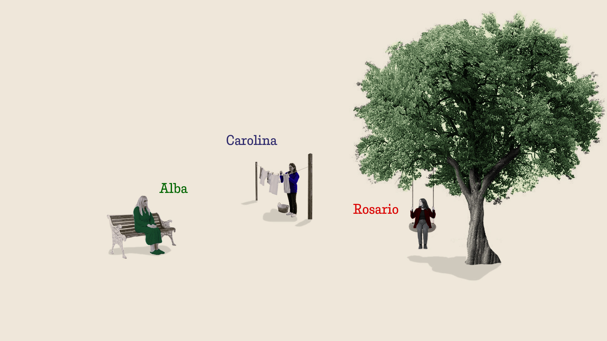
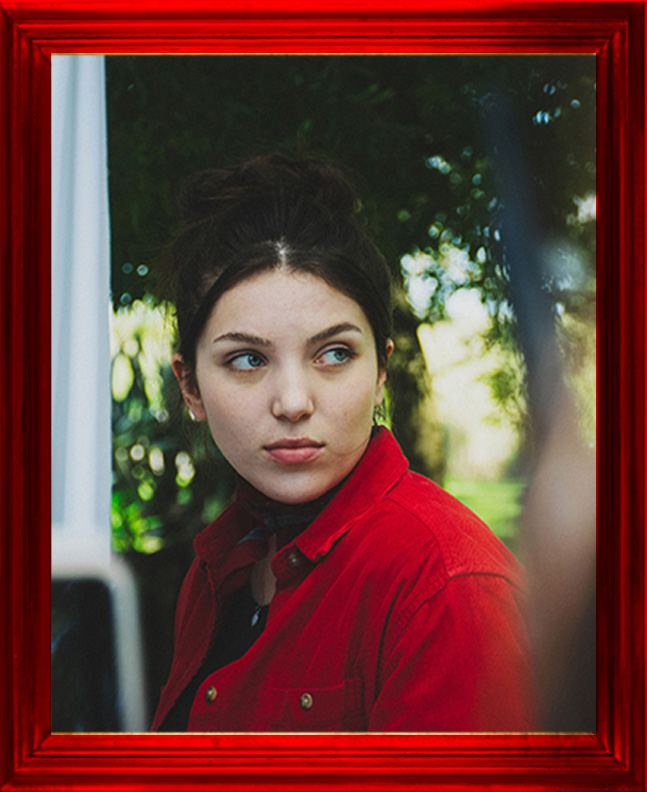
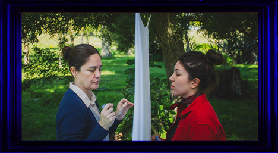
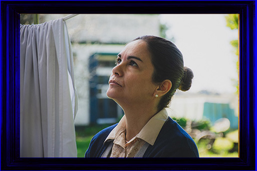
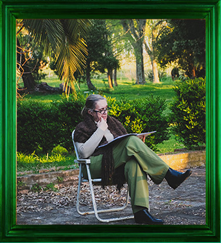
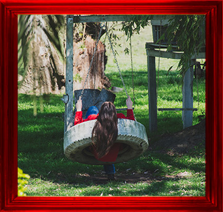
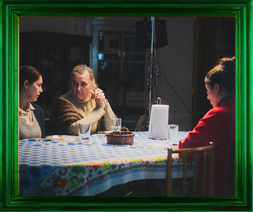
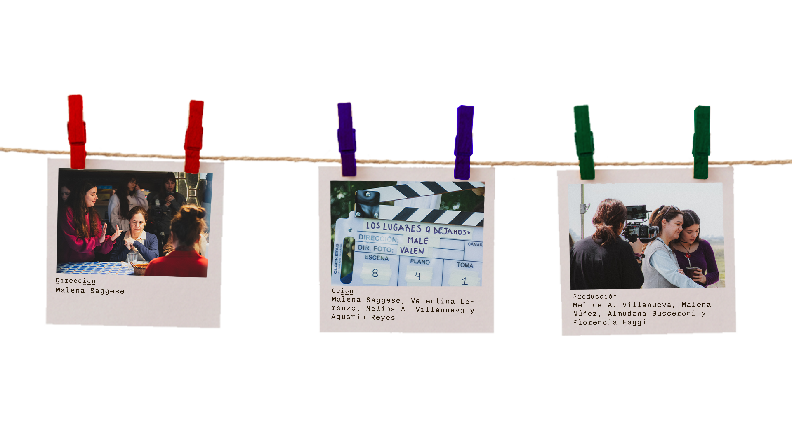
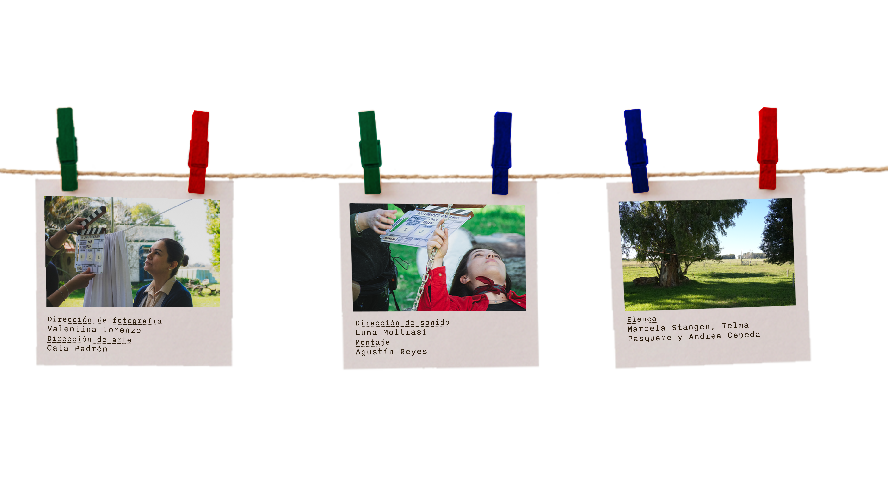

PROYECTO DE TESIS
Avances
Alba , Carolina y Rosario deben limpiar la casa de campo familiar que está en venta, perteneciente a la hermana de Carolina, ausente hace 15 años. Rosario descubre la historia de su tía y similitudes que tiene en común que le fueron ocultas. Durante el tiempo compartido, varios deseos, miedos y secretos familiares salen a la luz. Finalmente enfrentar el pasado detona una confrontación necesaria para que las tres puedan seguir adelante.
Personajes

Fotografías






El equipo
Arrastrá para descubrir las fotografías

